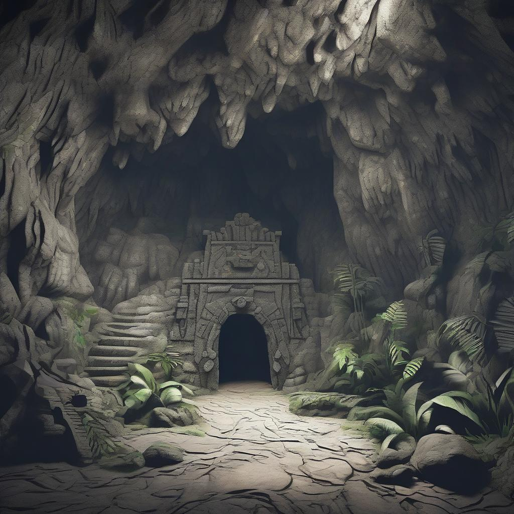

ChronoQuest: The Lost Timepieces
Act 2: The Prehistoric Timepiece
Your journey begins in the mists of prehistory. You emerge into a world untouched by modern hands—vast jungles stretch across the horizon, and the roar of dinosaurs echoes through the air. Somewhere in this primeval land lies the first Timepiece, hidden deep within a cave, its entrance marked by ancient symbols and guarded by creatures of a forgotten era.
To unlock this Timepiece, you must decipher the clues left in the shadows of time. Within the cave, walls are etched with cryptic symbols—cave paintings that tell the story of those who came before. Align the symbols correctly, and the secrets of the Timepiece will be revealed. But beware—the jungle’s ancient inhabitants will not let you pass easily.
